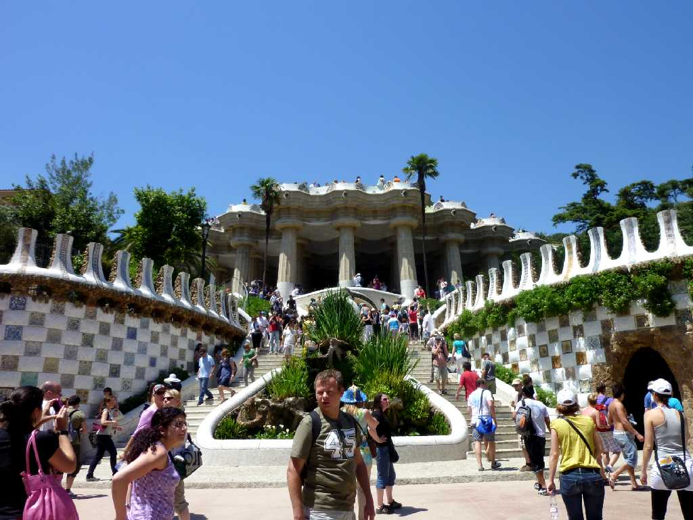
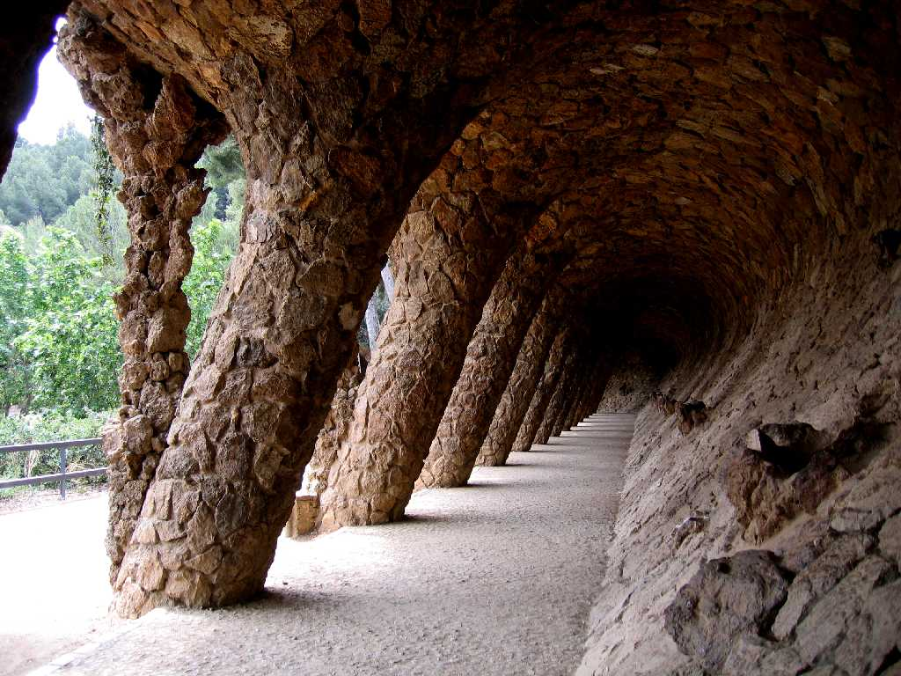
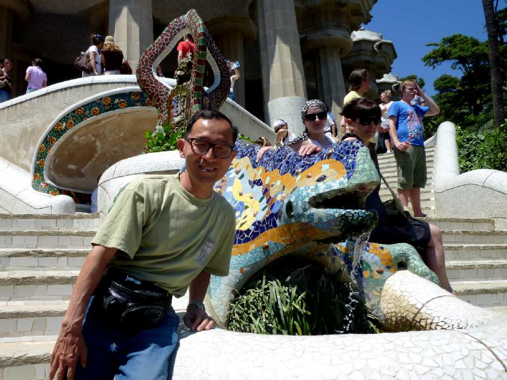
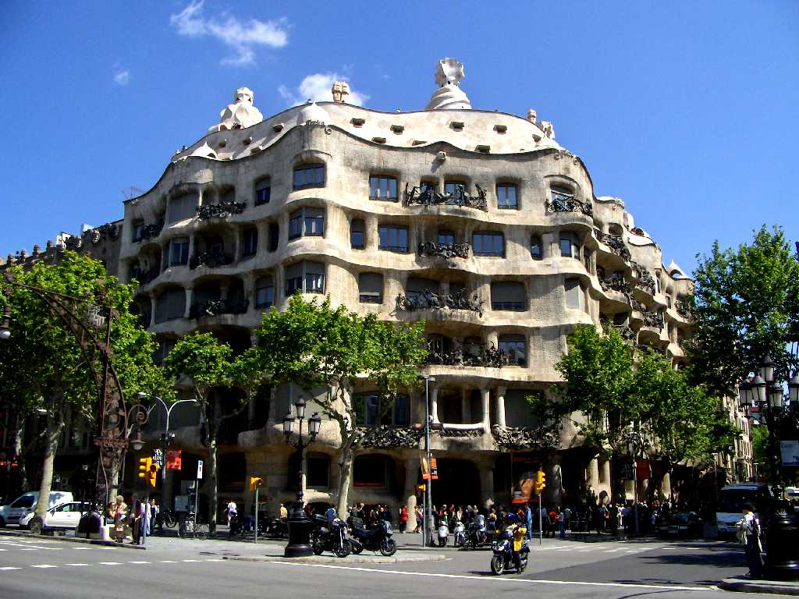
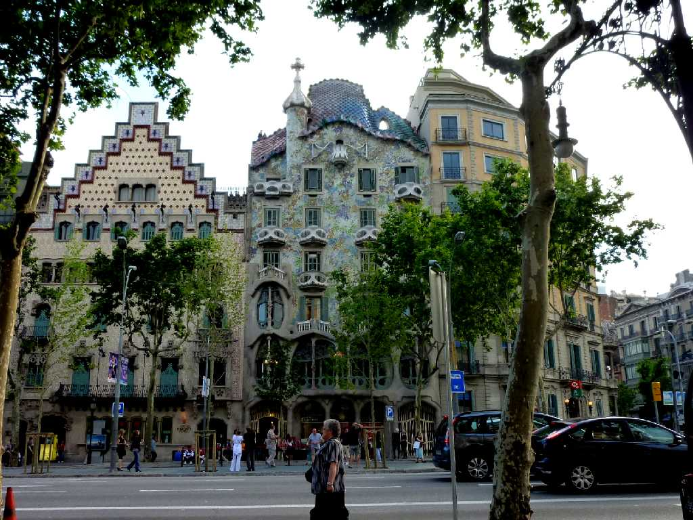

Parc Güell Barcelona
１９１４年に創られた分譲住宅でアントニガウディが自然との調和を目指した 広場や道路などのインフラを造り６０軒の販売計画で注文者のグエル伯爵とガウディ本人の２軒しか売れずバルセロナ市に寄付された

Voltes Parc Güell

June 5 2010 Parc Güell

Casa Milà Barcelona
１９０７年にガウディが創ったミラ邸で直線が使われていない建物 外観の波打つ曲線は地中海をイメージしたもので内側の天井や壁も波打っている

Casa Batllo Barcelona
バトリョ邸は１８７７年に建てられたものを１９０６年にガウディが改築したもので石柱が骨の様なので骨の家とも呼ばれている